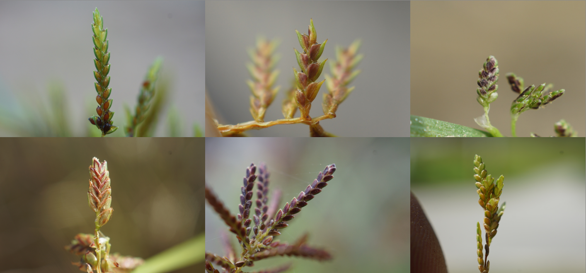

Plant Systematics
Department of Life Science, Hallym University
Classifying plants is not just naming them
it is preserving the memory of life.

Our laboratory integrates cutting-edge molecular techniques with traditional
morphological approaches to address a wide range of questions in plant taxonomy and systematics.
1. Population genetics and phylogenomics
We employ GBS (Genotyping-by-Sequencing) to investigate intra- and interspecific genetic variation,
conduct population genetic studies, and reconstruct molecular phylogenies. These efforts allow us to refine
the understanding of character evolution and taxonomic boundaries in monocots and other plant groups.
2. Exploration and utilization of overseas biological resources
Our team conducts extensive fieldwork in the Philippines, Myanmar, Cambodia, Laos, Mongolia, Micronesia, Tanzania,
and other regions, securing and analyzing plant materials that have been underrepresented in previous studies.
We pursue the discovery of new and unrecorded species, investigate ethnobotanical knowledge associated with local communities,
and strengthen international collaborations to advance plant taxonomy and conservation.
These efforts not only broaden our understanding of the morphological and molecular diversity of plants
but also highlight their conservation value and potential applications.
3. Morphological and molecular phylogenetic studies of monocots
Our research focuses on monocot plants,
particularly Poaceae (grasses), Cyperaceae (sedges), and Zingiberaceae (gingers).
By combining detailed morphological analyses with molecular phylogenetic approaches,
we conduct integrative taxonomic studies ranging from species delimitation to higher-level systematics.